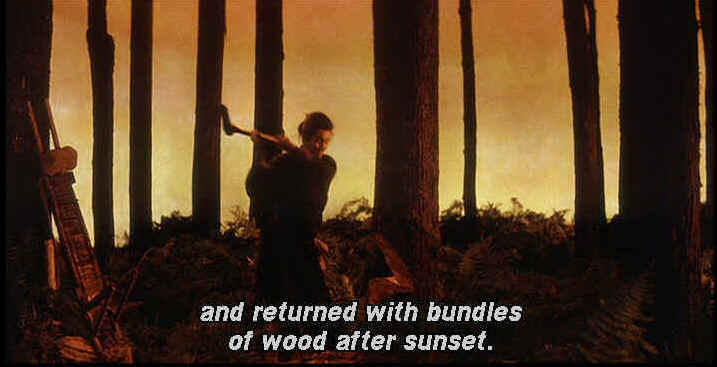

| Kwaidan/A,B+ |
| Criterion/1964/164/ANA 2.35 |
Kwaidan draws its lucky viewers into a supernatural world painted in timeless film images. Director Masaki Kobayashi could be
sitting at the center of a proverbial camp fire telling these tales by the flickering light of flaming wood. Join hands and sit in rapt attention as a master story-teller weaves these four tales of the nether world in ominous tones, all the while relishing the induced silence of his audience
Adapted from the stories of Lafcadio Hearn, an Irishman transplanted to Japan by way of America and Ireland, Kwaidan communicates the spirit and mystery of that faraway land, yet manages to speak eloquently in universal terms.
The first story is called The Black Hair. A samurai falls on hard times; in order to better himself, he leaves his wife for the daughter of an influential man in another province. Though his status has increased immeasurably, he finds the new wife self-centered and he is haunted by the image
of his first wife. After many years, he finally decides to return to his former home where he finds his new wife looking still young and beautiful. But tales of the supernatural don’t end like that, do they.
 |
| Stylish ghost story with fantastic set design. ©Criterion |
Next is The Woman of the Snow, my favorite of the four. Collecting wood in a white winter forest, two men are overcome by the elements. Finding shelter in a hut, they are visited by a beautiful female apparition. She sucks the breadth of life from one man, but smitten by the looks of the younger man, she spares him on the promise he will never reveal the circumstances of the fateful
evening. Soon after an orphaned woman shows up at the home of the man where he lives with his mother and they fall in love, marry, have a fine family. One night, the silence of his years old promise is challenged. Tatsuya Nakadai, eyes ever expressive, is wonderful as the woodsman.
In Hoichi, the Earless, a blind biwa player living at a monastery specializes in singing about the ultimate sea battle between the Heike and Genji clans. The visualization of the sea battle is highly stylized, evoking Kabuki and Noh drama painted in brightly contrasting hues. When Hoichi is visited by spirits of the battle the priests try to prevent his possession.
In a Cup of Tea is the final supernatural quarter of Kwaidan. A samurai ladles himself a cup of cool tea but before he can drink it the face of another samurai appears in the liquid. After repeated attempts at exorcising the face, the samurai drinks the tea. Later that night while on guard duty the samurai is visited mysteriously by the man from the cup of tea. The story plays itself in perfectly horrific liquid progression.
Deliberately composed in images related to the Kabuki theater by director Kobayashi, Kwaidan is direct in its approach, short on dialogue and brilliant on image. Photography is as graceful as the storytelling. Beginning with the ravishing credit sequence, Kobayashi paints indelible cinematic pictures to be remembered always. The musical score by
Toru Takematsu is atonal in character and is more akin to sound effects than music. It enhances the supernatural essence in the precise strokes of a master samurai’s blade.
Kwaidan comes to DVD in a sumptuous transfer made from a new composite 35mm low-contrast print. The source elements are not in perfect condition. Numerous scratches show up on the image in the and there are specks of dirt here and there. But the color depth is a joy to behold. Bright reds, deep blacks, The source material for Kwaidan is excellent with only
a sprinkling of age related marking on this laserdisc of the 1964 film. Almost all the images are sharp and there is little edge ringing even in peak transitional scenes. White English subtitles appear on the image. Sound is reasonably good in mono. Takemitsu's score is very effective, recorded with a particular openess. |
|

Selections from the feature archive include articles on Akira Kurosawa, Frank Darabont, Blonde Bimbos, Hollywood
Street Gangs, or Vietnam: The Hollywood Pariah, and many more....
Epic Images of Kurosawa

Click on the image above for as original view of Akira Kurosawa's work

The Movie Poster Archive includes extensive poster images from the films of stars like Susan Hayward, Kirk Douglas, Katharine Hepburn and many more. Our featured star is Tyrone Power.
 
DVDPlanet is the DVD incarnation of legendary laser retailer Ken Crane's. Deep discounts and serious service.
 Direct from the corridors of the Home Theater Forum, Home Theater Talk is the newest place on the Net to discuss everything home theater. Friendly atmosphere and knowledgeable folks are the secret ingredients. Direct from the corridors of the Home Theater Forum, Home Theater Talk is the newest place on the Net to discuss everything home theater. Friendly atmosphere and knowledgeable folks are the secret ingredients.

The American Widescreen Museum, is the ultimate resource for widescreen movie information, Martin Hart's reliable site is a great tool for movie buffs.
 Kinoeye Archive Kinoeye Archive
This is a resource of all content-rich materials on the web relating to Central and East European cinema. The ultimate aim of the Kinoeye Archive is to provide a near-as-damn-it definitive index of intelligent and thoughtful English-language analysis of Central and Eastern European cinema on the web.
Choko Movie Posters

The popular Paris movie poster store makes it's way to the Internet with an outstanding selection of French Movie Posters. Many beautiful images on display in a searchable data base.
|